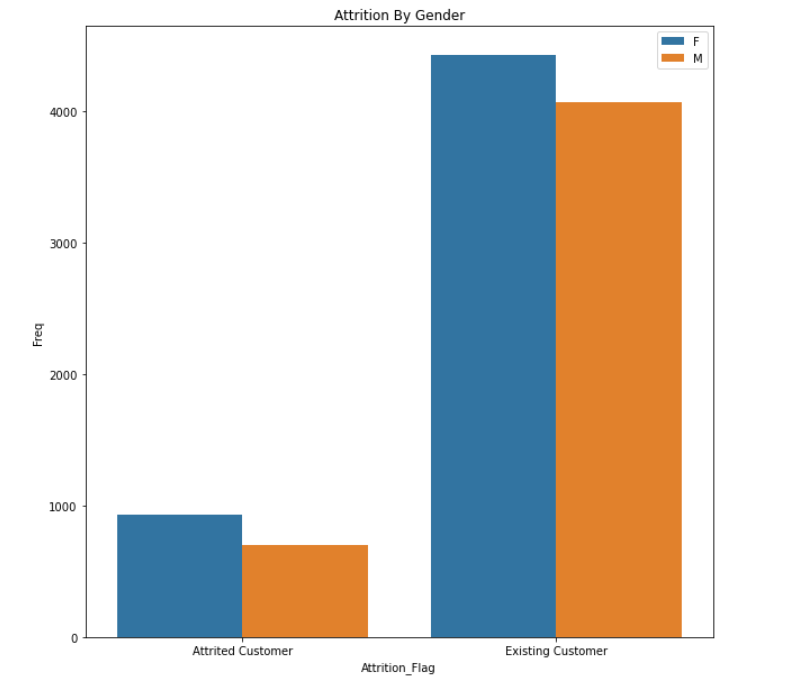
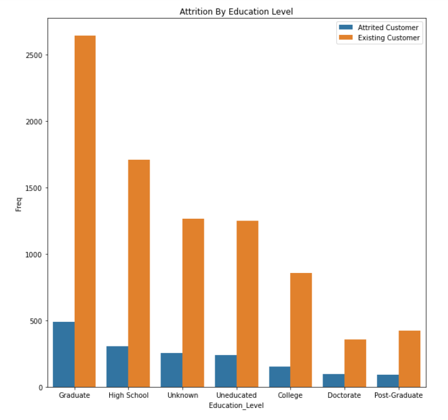

Analisis
1. Terdapan 83% Customer yang retain dan 16.07% customer yang melakukan Churn
Gender Distribution
Analisis
1. Terdapat 57.91% Pria dan 47.09% Wanita
Attrition Flag by gender

Analisis
1. Tidak ada perbedaan signifikan pada Customer gender yang melakukan Churn atau Reteain
2. ........
3. ........
Card Category Percentile
Analisis
1. Bluecard di gunakan sebanyak 93%
2. Silver di gunakan sebanyak 1.15%
3. Gold di gunakan sebanyak 5.48%
4. Platinum di gunakan sebanyak 0.20%
Card Categoryby Gender
Analisis
1. Penguna Blue Card lebih banyak dari gender Female
2. Penguna Gold card lebih banyak dari gender Male.
3. Penguna Platinum Car seimbang antara male dan Female
Attrition Flag by Card Category
Analisis
1. Bluecard Paling tinggi dalam melakukab churn dari total seluruh pengguna
2. Goldcard Paling tinggi dalam melakukab churn sebanyak 18% dari total pengguna Gold Card
Education Level
Analisis
1. Pengguna paling banyak berasal dari High-School
2. Paling sedikit berasal dari Post-Graduate
Attrition By Education level

Analisis
1. Paling banyak yang melakukan churn merupakan berasal dari Graduatre education level
2. yang paling sedikit melakukan churn adalah Uneducated dan post-Graduate
Months_Book Distribution
Analisis
1. Churn terjadi paling tinggi pada saat Bulan 35 - 40 dan semakin lamaa customer semakinturun nilai churn nya
Months_Book Distribution by Gender
Analisis
1. Female lebih banyak melakukan churn pda waktu yang sama.
Month_in_Active
Analisis
1. dari plot di atas customer yang melakukan churn akan lebih tidak aktif dalam menggunakan kartu creditnya
2. customer yang exs paling lama tidak menggunakan kartunya selama 4 bulan
Month_in_Active Distribution
Analisis
1. Churn Customer lebih sedikit dalam menggunakan kartunya pada 3 bulan pertama
2. Retain Customer sering menggunakan kartunya dari awal bulan
3. ........
Contac_count_in_12_month Distribution
Analisis
1. pada Churn Customer jaranf di contac dalam 3 bulan pertama.
2. pada retain customer lebih banyak di lakukan contac pada 3 bulan pertama